The correlated \(N(0, 1)\) figure in cashr
Lei Sun
2018-10-03
Last updated: 2018-10-23
workflowr checks: (Click a bullet for more information)-
✔ R Markdown file: up-to-date
Great! Since the R Markdown file has been committed to the Git repository, you know the exact version of the code that produced these results.
-
✔ Environment: empty
Great job! The global environment was empty. Objects defined in the global environment can affect the analysis in your R Markdown file in unknown ways. For reproduciblity it’s best to always run the code in an empty environment.
-
✔ Seed:
set.seed(12345)The command
set.seed(12345)was run prior to running the code in the R Markdown file. Setting a seed ensures that any results that rely on randomness, e.g. subsampling or permutations, are reproducible. -
✔ Session information: recorded
Great job! Recording the operating system, R version, and package versions is critical for reproducibility.
-
Great! You are using Git for version control. Tracking code development and connecting the code version to the results is critical for reproducibility. The version displayed above was the version of the Git repository at the time these results were generated.✔ Repository version: 6ecb4ff
Note that you need to be careful to ensure that all relevant files for the analysis have been committed to Git prior to generating the results (you can usewflow_publishorwflow_git_commit). workflowr only checks the R Markdown file, but you know if there are other scripts or data files that it depends on. Below is the status of the Git repository when the results were generated:
Note that any generated files, e.g. HTML, png, CSS, etc., are not included in this status report because it is ok for generated content to have uncommitted changes.Ignored files: Ignored: .DS_Store Ignored: .Rhistory Ignored: .Rproj.user/ Ignored: analysis/.DS_Store Ignored: analysis/BH_robustness_cache/ Ignored: analysis/FDR_Null_cache/ Ignored: analysis/FDR_null_betahat_cache/ Ignored: analysis/Rmosek_cache/ Ignored: analysis/StepDown_cache/ Ignored: analysis/alternative2_cache/ Ignored: analysis/alternative_cache/ Ignored: analysis/ash_gd_cache/ Ignored: analysis/average_cor_gtex_2_cache/ Ignored: analysis/average_cor_gtex_cache/ Ignored: analysis/brca_cache/ Ignored: analysis/cash_deconv_cache/ Ignored: analysis/cash_fdr_1_cache/ Ignored: analysis/cash_fdr_2_cache/ Ignored: analysis/cash_fdr_3_cache/ Ignored: analysis/cash_fdr_4_cache/ Ignored: analysis/cash_fdr_5_cache/ Ignored: analysis/cash_fdr_6_cache/ Ignored: analysis/cash_paper_fig1_cache/ Ignored: analysis/cash_paper_fig_leukemia_cache/ Ignored: analysis/cash_plots_2_cache/ Ignored: analysis/cash_plots_3_cache/ Ignored: analysis/cash_plots_4_cache/ Ignored: analysis/cash_plots_5_cache/ Ignored: analysis/cash_plots_cache/ Ignored: analysis/cash_sim_1_cache/ Ignored: analysis/cash_sim_2_cache/ Ignored: analysis/cash_sim_3_cache/ Ignored: analysis/cash_sim_4_cache/ Ignored: analysis/cash_sim_5_cache/ Ignored: analysis/cash_sim_6_cache/ Ignored: analysis/cash_sim_7_cache/ Ignored: analysis/correlated_z_2_cache/ Ignored: analysis/correlated_z_3_cache/ Ignored: analysis/correlated_z_cache/ Ignored: analysis/create_null_cache/ Ignored: analysis/cutoff_null_cache/ Ignored: analysis/design_matrix_2_cache/ Ignored: analysis/design_matrix_cache/ Ignored: analysis/diagnostic_ash_cache/ Ignored: analysis/diagnostic_correlated_z_2_cache/ Ignored: analysis/diagnostic_correlated_z_3_cache/ Ignored: analysis/diagnostic_correlated_z_cache/ Ignored: analysis/diagnostic_plot_2_cache/ Ignored: analysis/diagnostic_plot_cache/ Ignored: analysis/efron_leukemia_cache/ Ignored: analysis/fitting_normal_cache/ Ignored: analysis/gaussian_derivatives_2_cache/ Ignored: analysis/gaussian_derivatives_3_cache/ Ignored: analysis/gaussian_derivatives_4_cache/ Ignored: analysis/gaussian_derivatives_5_cache/ Ignored: analysis/gaussian_derivatives_cache/ Ignored: analysis/gd-ash_cache/ Ignored: analysis/gd_delta_cache/ Ignored: analysis/gd_lik_2_cache/ Ignored: analysis/gd_lik_cache/ Ignored: analysis/gd_w_cache/ Ignored: analysis/knockoff_10_cache/ Ignored: analysis/knockoff_2_cache/ Ignored: analysis/knockoff_3_cache/ Ignored: analysis/knockoff_4_cache/ Ignored: analysis/knockoff_5_cache/ Ignored: analysis/knockoff_6_cache/ Ignored: analysis/knockoff_7_cache/ Ignored: analysis/knockoff_8_cache/ Ignored: analysis/knockoff_9_cache/ Ignored: analysis/knockoff_cache/ Ignored: analysis/knockoff_var_cache/ Ignored: analysis/marginal_z_alternative_cache/ Ignored: analysis/marginal_z_cache/ Ignored: analysis/mosek_reg_2_cache/ Ignored: analysis/mosek_reg_4_cache/ Ignored: analysis/mosek_reg_5_cache/ Ignored: analysis/mosek_reg_6_cache/ Ignored: analysis/mosek_reg_cache/ Ignored: analysis/pihat0_null_cache/ Ignored: analysis/plot_diagnostic_cache/ Ignored: analysis/poster_obayes17_cache/ Ignored: analysis/real_data_simulation_2_cache/ Ignored: analysis/real_data_simulation_3_cache/ Ignored: analysis/real_data_simulation_4_cache/ Ignored: analysis/real_data_simulation_5_cache/ Ignored: analysis/real_data_simulation_cache/ Ignored: analysis/rmosek_primal_dual_2_cache/ Ignored: analysis/rmosek_primal_dual_cache/ Ignored: analysis/seqgendiff_cache/ Ignored: analysis/simulated_correlated_null_2_cache/ Ignored: analysis/simulated_correlated_null_3_cache/ Ignored: analysis/simulated_correlated_null_cache/ Ignored: analysis/simulation_real_se_2_cache/ Ignored: analysis/simulation_real_se_cache/ Ignored: analysis/smemo_2_cache/ Ignored: data/LSI/ Ignored: docs/.DS_Store Ignored: docs/figure/.DS_Store Ignored: output/fig/ Ignored: output/paper/
Expand here to see past versions:
| File | Version | Author | Date | Message |
|---|---|---|---|---|
| rmd | 6ecb4ff | LSun | 2018-10-23 | wflow_publish(“analysis/cash_paper_fig1.rmd”) |
| rmd | 999e280 | Lei Sun | 2018-10-23 | pvalue shoulder |
| rmd | d77af2c | Lei Sun | 2018-10-22 | shoulder |
| rmd | 1928392 | LSun | 2018-10-22 | fig1 |
| html | f0d9829 | LSun | 2018-10-12 | Build site. |
| rmd | f68e9c4 | LSun | 2018-10-12 | wflow_publish(“analysis/cash_paper_fig1.rmd”) |
| rmd | 6b4cc76 | Lei Sun | 2018-10-12 | diagnostic plots on correlated noise |
| html | 5143b0e | Lei Sun | 2018-10-07 | Build site. |
| rmd | 490e0ab | Lei Sun | 2018-10-07 | wflow_publish(c(“decor_post.rmd”, “cash_paper_fig1.rmd”)) |
| html | a16f751 | LSun | 2018-10-07 | Build site. |
| rmd | 84c7d31 | LSun | 2018-10-07 | wflow_publish(“analysis/cash_paper_fig1.rmd”) |
| html | 133541a | LSun | 2018-10-05 | Build site. |
| rmd | 49f870a | LSun | 2018-10-05 | wflow_publish(c(“cash_paper_fig_leukemia.rmd”, “cash_paper_fig1.rmd”, |
Introduction
Document the correlated \(N(0, 1)\) figure in the cashr paper.
source("../code/gdash_lik.R")Loading required package: EQLLoading required package: ttutilsLoading required package: SQUAREMLoading required package: REBayesLoading required package: MatrixWarning: package 'Matrix' was built under R version 3.4.4Loading required package: CVXR
Attaching package: 'CVXR'The following object is masked from 'package:stats':
powerLoading required package: PolynomFLoading required package: RmosekLoading required package: ashrsource("../code/gdfit.R")
z.mat <- readRDS("../output/z_null_liver_777.rds")
Z.gtex <- readRDS("../output/paper/simulation/Z.gtex.rds")sel = c(32, 327, 23, 459)
z.sel <- z.mat[sel, ]
z.sel[3, ] <- Z.gtex[[4503]]gd.ord <- 10
x.plot = seq(- max(abs(z.sel)) - 2, max(abs(z.sel)) + 2, length = 1000)
hermite = Hermite(gd.ord)
gd0.std = dnorm(x.plot)
matrix_lik_plot = cbind(gd0.std)
for (j in 1 : gd.ord) {
gd.std = (-1)^j * hermite[[j]](x.plot) * gd0.std / sqrt(factorial(j))
matrix_lik_plot = cbind(matrix_lik_plot, gd.std)
}
z = z.sel[4, ]
w <- gdfit(z, gd.ord, w.lambda = 10, w.rho = 0.5)$w
y.plot = matrix_lik_plot %*% w
z.hist = hist(z, breaks = 100, plot = FALSE)
y.max = max(z.hist$density, y.plot, dnorm(0))setEPS()
postscript("../output/paper/cor_z_hist.eps", width = 8, height = 6)
#pdf("../output/paper/cor_z_hist.pdf", width = 8, height = 6)
par(mfrow = c(2, 2)) # 2-by-2 grid of plots
par(oma = c(0.5, 2.5, 0, 0)) # make room (i.e. the 4's) for the overall x and y axis titles
par(mar = c(2, 2, 3.5, 1)) # make the plots be closer together
# now plot the graphs with the appropriate axes removed (via xaxt and yaxt),
# remove axis labels (so that they are not redundant with overall labels,
# and set some other nice choices for graphics parameters
for (i in 1 : 4) {
z = z.sel[i, ]
w <- gdfit(z, gd.ord)$w
y.plot = matrix_lik_plot %*% w
z.hist = hist(z, breaks = 100, plot = FALSE)
hist(z, breaks = seq(-10, 10, by = 0.1), prob = TRUE, ylim = c(0, y.max), main = NULL, xlab = "", xlim = range(c(abs(z.sel), -abs(z.sel))))
lines(x.plot, dnorm(x.plot), col = "blue", lwd = 2)
lines(x.plot, y.plot, col = "red", lwd = 2)
legend("topleft", bty = "n", paste0('(', letters[i], ')'), cex = 1.25)
}
# print the overall labels
mtext('Density', side = 2, outer = TRUE, line = 1)
mtext(latex2exp::TeX('Histograms of $10^4$ Correlated N(0,1) z-scores'), line = -2, outer = TRUE)
legend("topleft", inset = c(-0.65, -0.25), legend = c("N(0, 1)", "Gaussian Derivatives"), lty = 1, lwd = 2, xpd = NA, col = c("blue", "red"), ncol = 2)
dev.off()quartz_off_screen
2 ashr::plot_diagnostic on these correlated noise
for (i in 1 : 4) {
par(mfrow = c(1, 1))
z = z.sel[i, ]
hist(z, breaks = 100, prob = TRUE, ylim = c(0, y.max), main = NULL, xlab = "", xlim = range(c(abs(z.sel), -abs(z.sel))))
lines(x.plot, dnorm(x.plot), col = "green", lwd = 2)
par(mfrow = c(2, 2))
fit.ash.n <- ashr::ash(z, 1, mixcompdist = "normal", method = "fdr")
cat("mixcompdist = normal")
ashr::plot_diagnostic(fit.ash.n, breaks = 100, plot.hist = TRUE)
par(mfrow = c(2, 2))
fit.ash.u <- ashr::ash(z, 1, mixcompdist = "uniform", method = "fdr")
cat("mixcompdist = uniform")
ashr::plot_diagnostic(fit.ash.u, breaks = 100, plot.hist = TRUE)
par(mfrow = c(2, 2))
fit.ash.hu <- ashr::ash(z, 1, mixcompdist = "halfuniform", method = "fdr")
cat("mixcompdist = halfuniform")
ashr::plot_diagnostic(fit.ash.hu, breaks = 100, plot.hist = TRUE)
}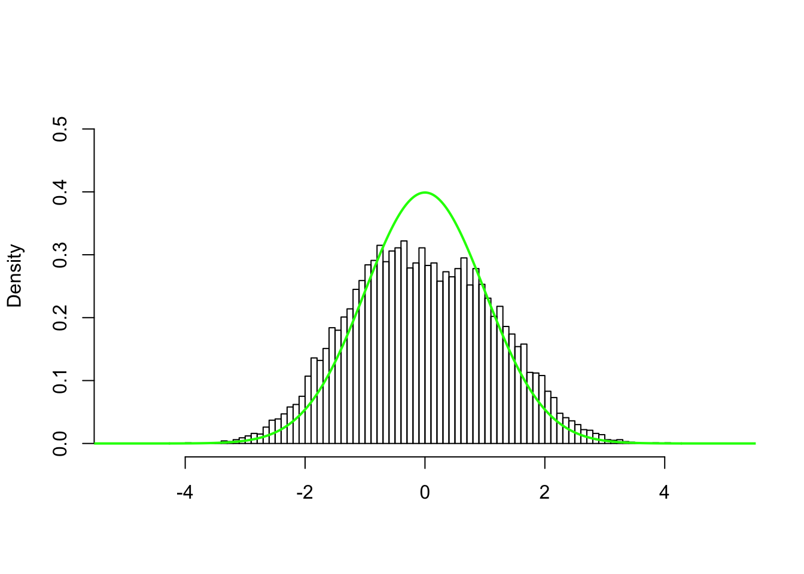
mixcompdist = normalPress [enter] to see next plotPress [enter] to see next plotPress [enter] to see next plotmixcompdist = uniformPress [enter] to see next plotPress [enter] to see next plotPress [enter] to see next plot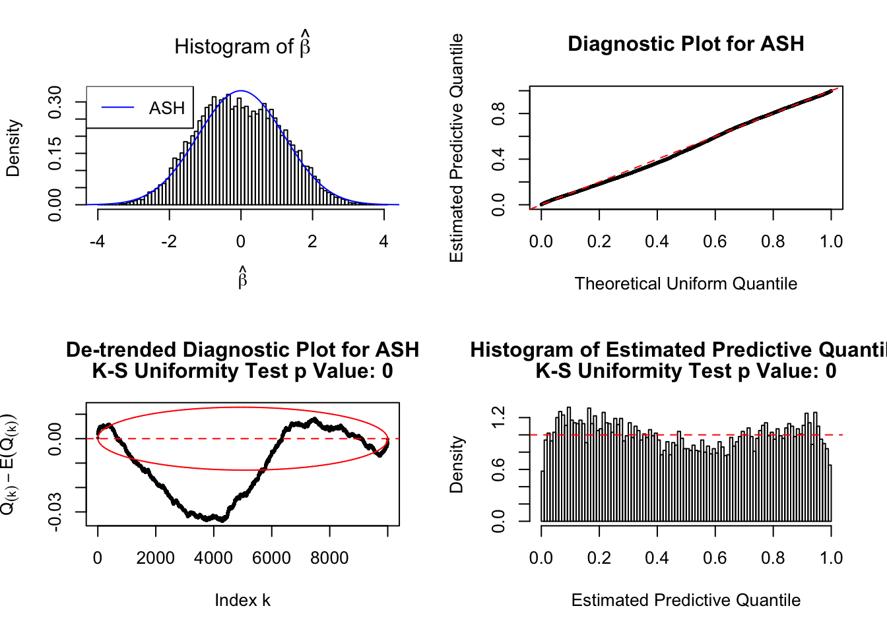
mixcompdist = halfuniformPress [enter] to see next plotPress [enter] to see next plotPress [enter] to see next plot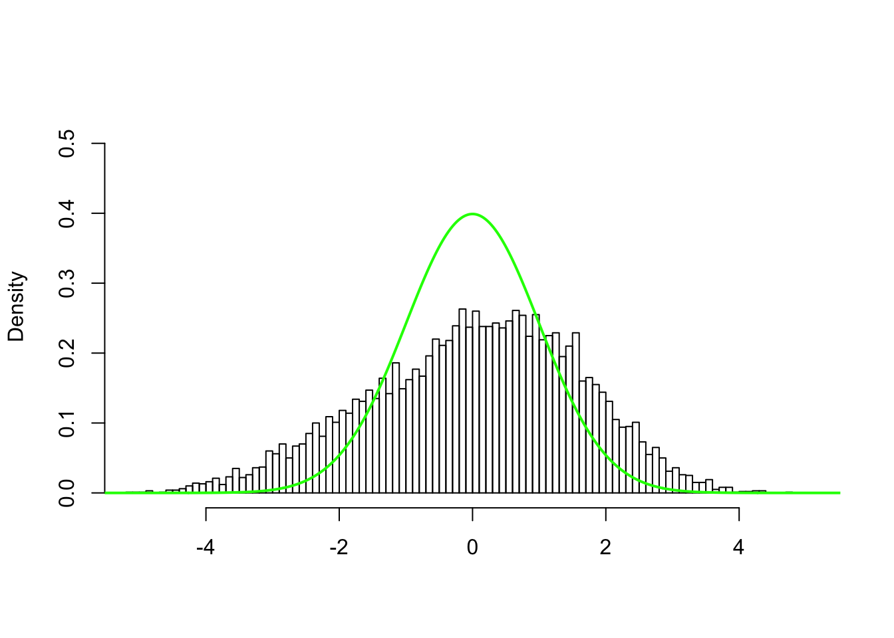
mixcompdist = normalPress [enter] to see next plotPress [enter] to see next plotPress [enter] to see next plot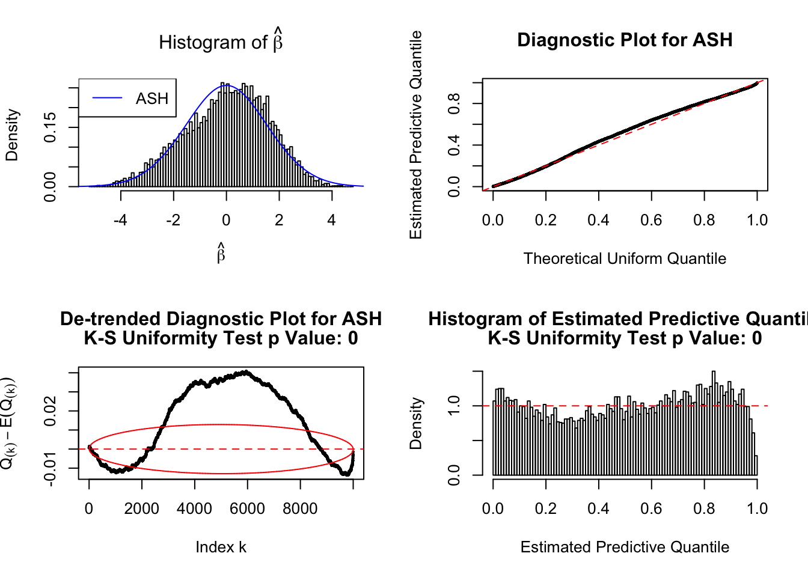
mixcompdist = uniformPress [enter] to see next plotPress [enter] to see next plotPress [enter] to see next plot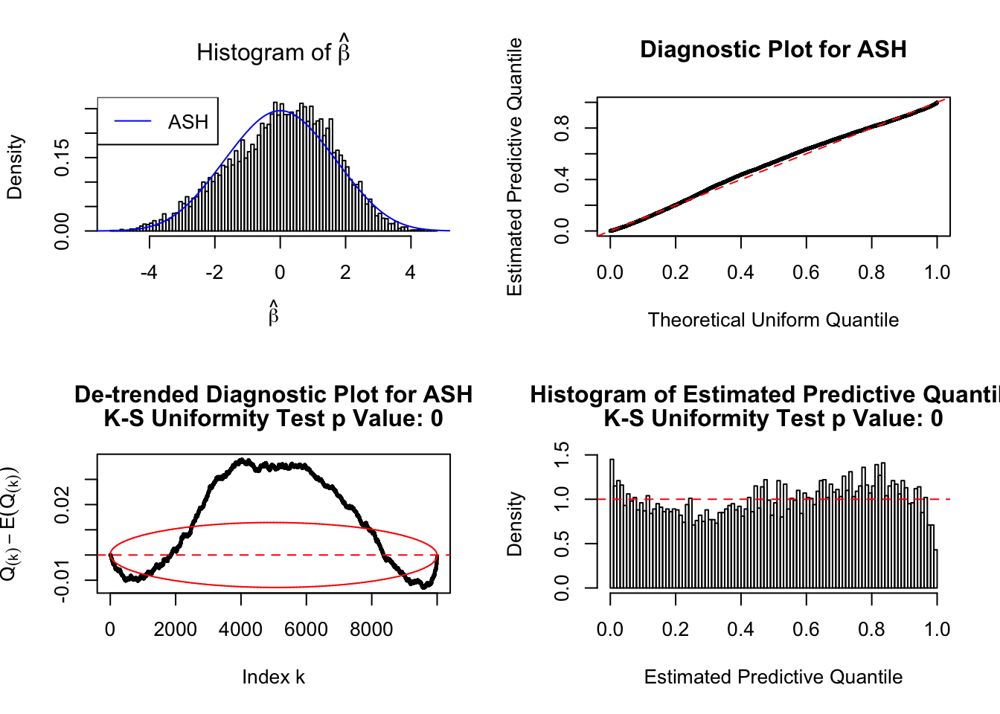
mixcompdist = halfuniformPress [enter] to see next plotPress [enter] to see next plotPress [enter] to see next plot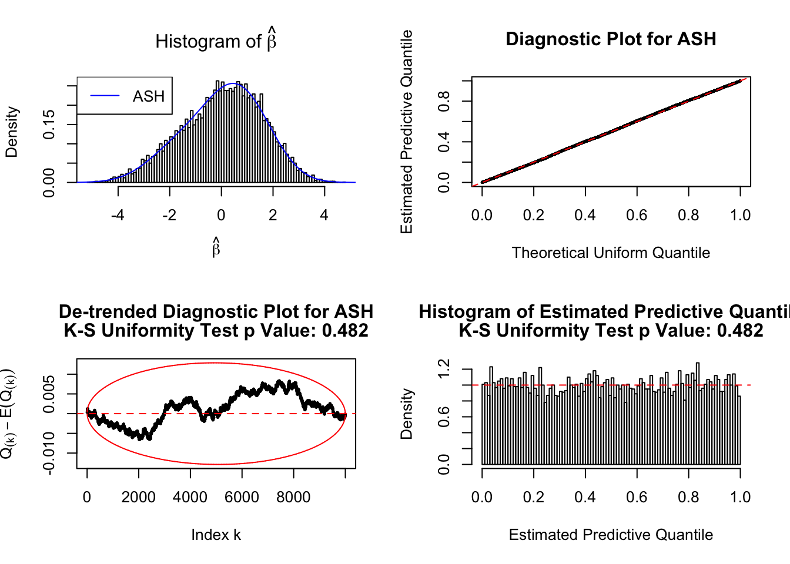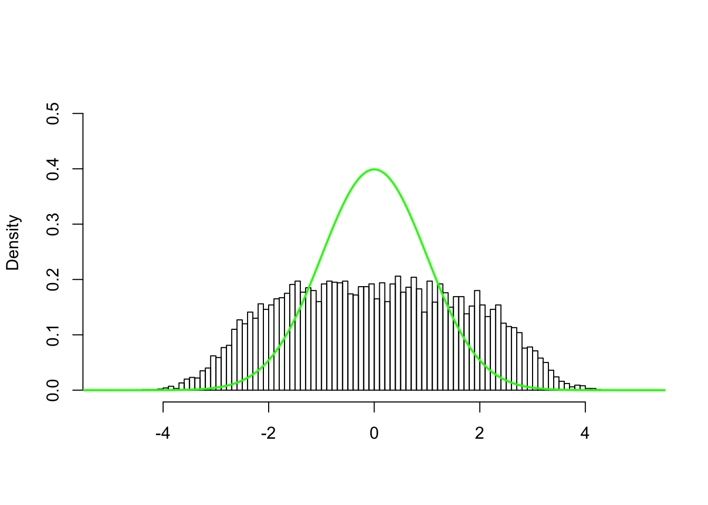
mixcompdist = normalPress [enter] to see next plotPress [enter] to see next plotPress [enter] to see next plot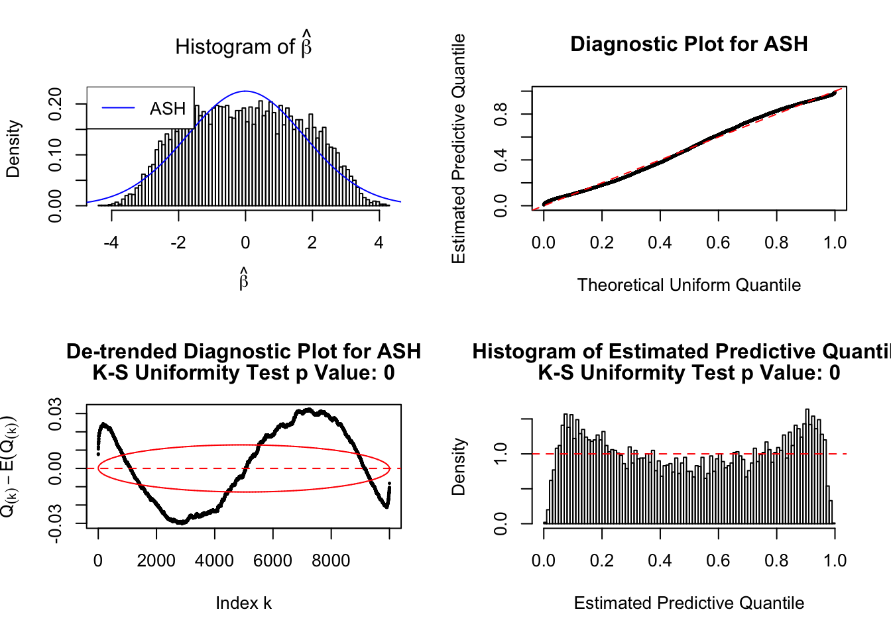
mixcompdist = uniformPress [enter] to see next plotPress [enter] to see next plotPress [enter] to see next plot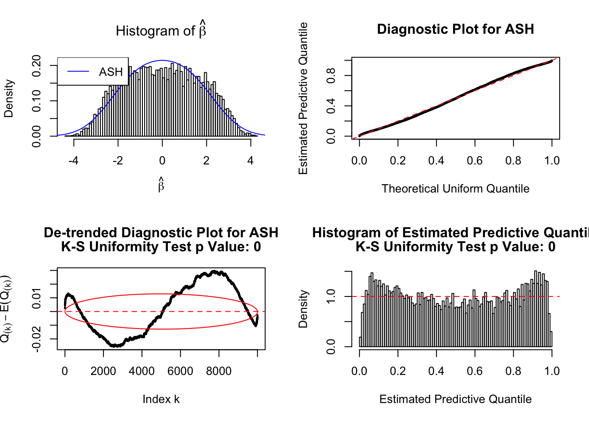
mixcompdist = halfuniformPress [enter] to see next plotPress [enter] to see next plotPress [enter] to see next plot 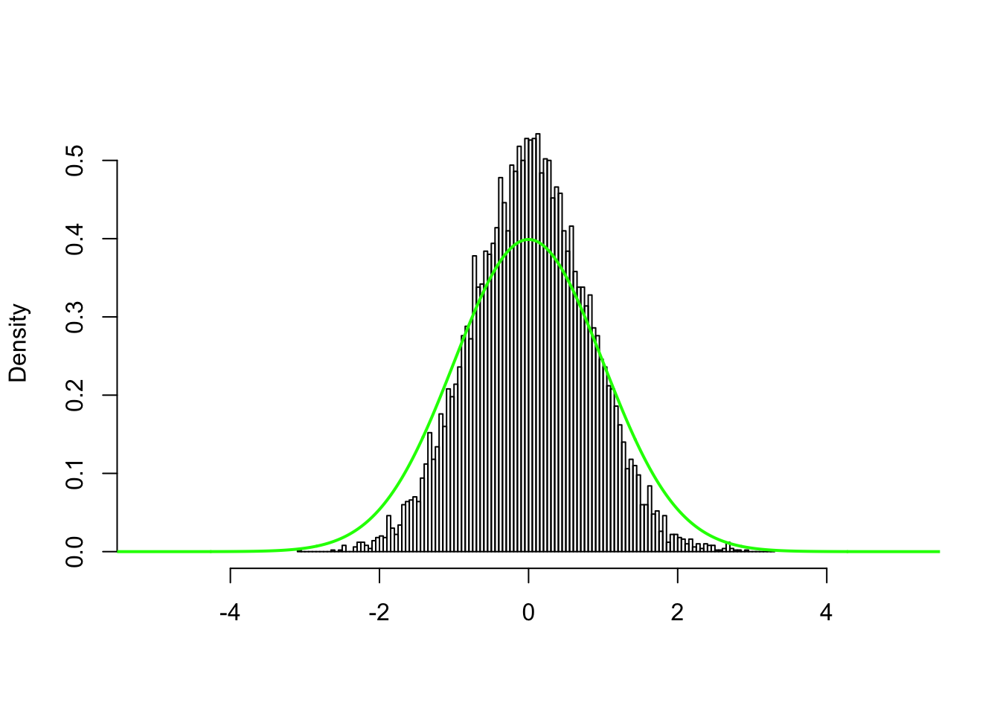
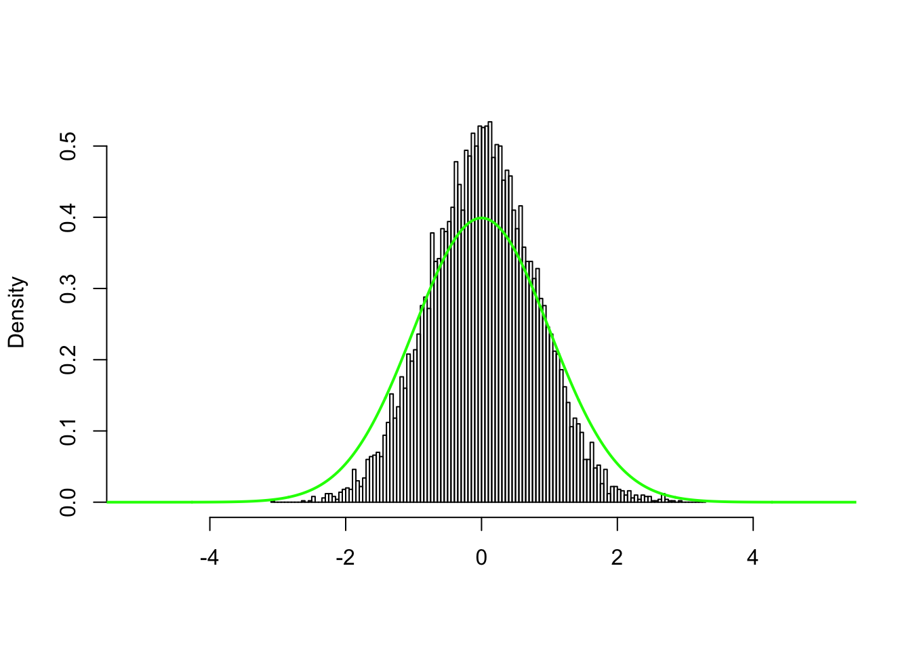
mixcompdist = normalPress [enter] to see next plotPress [enter] to see next plotPress [enter] to see next plot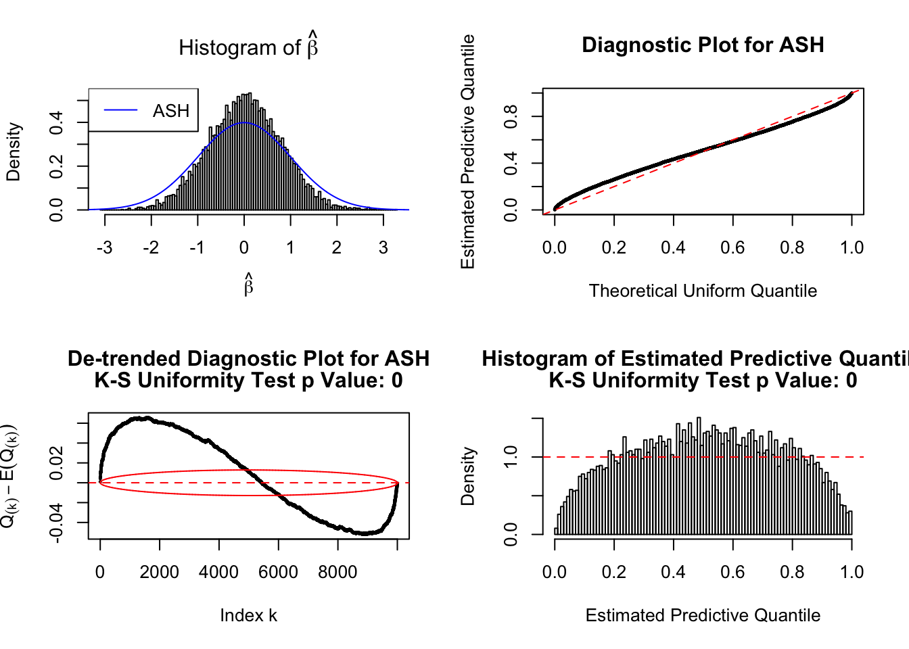
mixcompdist = uniformPress [enter] to see next plotPress [enter] to see next plotPress [enter] to see next plot
mixcompdist = halfuniformPress [enter] to see next plotPress [enter] to see next plotPress [enter] to see next plot
different methods applied to (c)
q <- 0.1
z <- z.sel[3, ]
p <- pnorm(-abs(z)) * 2
## under 0.005
sum(p <= 0.005)[1] 809pnorm(qnorm(0.0025), 0, 1.6) * 2 * 1e4[1] 793.6266p.bh <- p.adjust(p, method = "BH")
## BHq at FDR 0.05
sum(p.bh <= q)[1] 1822fit.q <- qvalue::qvalue(p)
## pi0 by qvalue
fit.q$pi0[1] 0.433538## qvalue at FDR 0.05
sum(fit.q$qvalues <= q)[1] 3818## pi0 by ashr
fit.a <- ashr::ash(z, 1, mixcompdist = "normal", method = "fdr")
ashr::get_pi0(fit.a)[1] 0.01512495## ashr at FDR 0.05
sum(ashr::get_qvalue(fit.a) <= q)[1] 10000shoulder inflation figure
## the image is 7.5 * 3
setEPS()
postscript("../output/paper/cor_z_cdf.eps", width = 8, height = 2.5)
#pdf("../output/paper/cor_z_cdf.pdf", width = 8, height = 2.5)
par(mfrow = c(1, 3))
par(oma = c(1, 2.5, 0, 8)) # make room (i.e. the 4's) for the overall x and y axis titles
par(mar = c(2, 2, 2.5, 1)) # make the plots be closer together
plot(ecdf(z), xlab = "", ylab = "", lwd = 2, main = expression("panel (c) z-scores"), cex.main = 1.5)
lines(seq(-6, 6, by = 0.01), pnorm(seq(-6, 6, by = 0.01)), col = "blue", lwd = 2)
lines(seq(-6, 6, by = 0.01), pnorm(seq(-6, 6, by = 0.01), 0, 1.6), col = "green", lwd = 2)
rect(xleft = c(-5, 2.5),
xright = c(-2.5, 5),
ytop = c(0.05, 1),
ybottom = c(0, 0.95), border = "red", lty = c(1, 5))
plot(ecdf(z), xlab = "", ylab = "", main = expression("left tail"), lwd = 2, xlim = c(-5, -2.5), ylim = c(0, 0.05), cex.main = 1.5, bty = "n")
box(col = "red")
lines(seq(-6, 6, by = 0.01), pnorm(seq(-6, 6, by = 0.01)), col = "blue", lwd = 2)
lines(seq(-6, 6, by = 0.01), pnorm(seq(-6, 6, by = 0.01), 0, 1.6), col = "green", lwd = 2)
plot(ecdf(z), xlab = "", ylab = "", main = expression("right tail"), lwd = 2, xlim = c(2.5, 5), ylim = c(0.95, 1), cex.main = 1.5, bty = "n")
box(col = "red", lty = 5)
lines(seq(-6, 6, by = 0.01), pnorm(seq(-6, 6, by = 0.01)), col = "blue", lwd = 2)
lines(seq(-6, 6, by = 0.01), pnorm(seq(-6, 6, by = 0.01), 0, 1.6), col = "green", lwd = 2)
mtext('CDF', side = 2, outer = TRUE, line = 1)
legend("topright", inset = c(-0.68, 0.3), legend = c('panel (c)', 'N(0, 1)', expression(N(0, 1.6^2))), lty = 1, lwd = 2, xpd = NA, col = c('black', "blue", "green"), ncol = 1, cex = 1.25, bty = 'n')
dev.off()quartz_off_screen
2 # 7.5 * 3
setEPS()
postscript("../output/paper/cor_z_pval.eps", width = 12, height = 3)
#pdf("../output/paper/cor_z_pval.pdf", width = 12, height = 3)
thresh.color <- c("maroon", "purple", "orange")
#thresh.color <- scales::hue_pal()(10)[5 : 7]
par(mfrow = c(1, 4))
par(oma = c(0, 0, 0, 11)) # make room (i.e. the 4's) for the overall x and y axis titles
par(mar = c(4.5, 4, 4.5, 1)) # make the plots be closer together
p.hist <- hist(p, breaks = seq(0, 1, by = 0.01), plot = FALSE)
plot(0, 0, xlab = "p-values", ylab = "", type = "n", xlim = c(0, 1), ylim = c(0, max(p.hist$density)), main = expression(atop("Histogram of p-val of", 'panel (c) z-scores')), cex.main = 1.5, cex.lab = 1.5)
title(ylab = "Density", line = 2.5, cex.lab = 1.5)
abline(v = c(0.05 / 1e4, pnorm(-sqrt(2 * log(1e4))) * 2, 0.005), lwd = 2, col = thresh.color[3 : 1], lty = c(4, 2, 1))
hist(p, prob = TRUE, breaks = seq(0, 1, by = 0.01), xlab = "", add = TRUE, col = rgb(0, 0, 0, 0.75))Warning in rect(x$breaks[-nB], 0, x$breaks[-1L], y, col = col, border =
border, : semi-transparency is not supported on this device: reported only
once per pageset.seed(5)
p.norm.1 <- pnorm(-abs(rnorm(1e4))) * 2
set.seed(25)
p.norm.1.6 <- pnorm(-abs(rnorm(1e4, 0, 1.6))) * 2
y.max <- -log(min(p.norm.1, p, p.norm.1.6))
y.max <- 20
par(mar = c(4.5, 4, 4.5, 1)) # make the plots be closer together
plot(sample(-log(p)), ylim = c(0, y.max), ylab = "", main = expression(atop('-log(p-val) of', "panel (c) z-scores")), cex.main = 1.5, cex.lab = 1.5)
title(ylab = '-log(p)', cex.lab = 1.5, line = 2.5)
abline(h = -log(c(
0.005,
pnorm(-sqrt(2 * log(1e4))) * 2,
0.05 / 1e4
)), lwd = 2, col = thresh.color, lty = c(1, 2, 4))
plot(-log(p.norm.1), ylim = c(0, y.max), ylab = "", main = expression(atop('-log(p-val) of', "indep N(0,1) samples")), col = "blue", cex.main = 1.5, cex.lab = 1.5)
title(ylab = '-log(p)', cex.lab = 1.5, line = 2.5)
abline(h = -log(c(
0.005,
pnorm(-sqrt(2 * log(1e4))) * 2,
0.05 / 1e4
)), lwd = 2, col = thresh.color, lty = c(1, 2, 4))
plot(-log(p.norm.1.6), ylim = c(0, y.max), ylab = "", main = expression(atop('-log(p-val) of', paste("indep ", N(0, 1.6^2), " samples"))), col = "green", cex.main = 1.5, cex.lab = 1.5)
title(ylab = '-log(p)', cex.lab = 1.5, line = 2.5)
abline(h = -log(c(
0.005,
pnorm(-sqrt(2 * log(1e4))) * 2,
0.05 / 1e4
)), lwd = 2, col = thresh.color, lty = c(1, 2, 4))
#legend("topright", inset = c(-0.5, 0), legend = c("p = 0.005", "Universal Threshold", "Bonferroni"), lty = 1, lwd = 2, xpd = NA, col = c("red", "orange", "yellow"), ncol = 1, cex = 1.25)
legend("topright", inset = c(-0.82, 0.3),
legend = c(
latex2exp::TeX('p-val = $0.05 / 10^4$'),
'Univ Thresh',
"p-val = 0.005"
), lty = c(4, 2, 1), lwd = 2, xpd = NA,
col = thresh.color[3 : 1], ncol = 1, cex = 1.25, bty = "n")
dev.off()quartz_off_screen
2 Session information
sessionInfo()R version 3.4.3 (2017-11-30)
Platform: x86_64-apple-darwin15.6.0 (64-bit)
Running under: macOS 10.14
Matrix products: default
BLAS: /Library/Frameworks/R.framework/Versions/3.4/Resources/lib/libRblas.0.dylib
LAPACK: /Library/Frameworks/R.framework/Versions/3.4/Resources/lib/libRlapack.dylib
locale:
[1] en_US.UTF-8/en_US.UTF-8/en_US.UTF-8/C/en_US.UTF-8/en_US.UTF-8
attached base packages:
[1] stats graphics grDevices utils datasets methods base
other attached packages:
[1] ashr_2.2-7 Rmosek_8.0.69 PolynomF_1.0-2 CVXR_0.95
[5] REBayes_1.3 Matrix_1.2-14 SQUAREM_2017.10-1 EQL_1.0-0
[9] ttutils_1.0-1
loaded via a namespace (and not attached):
[1] latex2exp_0.4.0 gmp_0.5-13.1 Rcpp_0.12.16
[4] pillar_1.2.2 plyr_1.8.4 compiler_3.4.3
[7] git2r_0.21.0 workflowr_1.1.1 R.methodsS3_1.7.1
[10] R.utils_2.6.0 iterators_1.0.9 tools_3.4.3
[13] digest_0.6.15 bit_1.1-13 tibble_1.4.2
[16] gtable_0.2.0 evaluate_0.10.1 lattice_0.20-35
[19] rlang_0.2.0 foreach_1.4.4 yaml_2.1.19
[22] parallel_3.4.3 Rmpfr_0.7-0 ECOSolveR_0.4
[25] stringr_1.3.1 knitr_1.20 rprojroot_1.3-2
[28] bit64_0.9-7 grid_3.4.3 qvalue_2.10.0
[31] R6_2.2.2 rmarkdown_1.9 reshape2_1.4.3
[34] ggplot2_2.2.1 magrittr_1.5 whisker_0.3-2
[37] splines_3.4.3 scales_0.5.0 MASS_7.3-50
[40] backports_1.1.2 codetools_0.2-15 htmltools_0.3.6
[43] scs_1.1-1 assertthat_0.2.0 colorspace_1.3-2
[46] stringi_1.2.2 lazyeval_0.2.1 munsell_0.4.3
[49] pscl_1.5.2 doParallel_1.0.11 truncnorm_1.0-8
[52] R.oo_1.22.0 This reproducible R Markdown analysis was created with workflowr 1.1.1